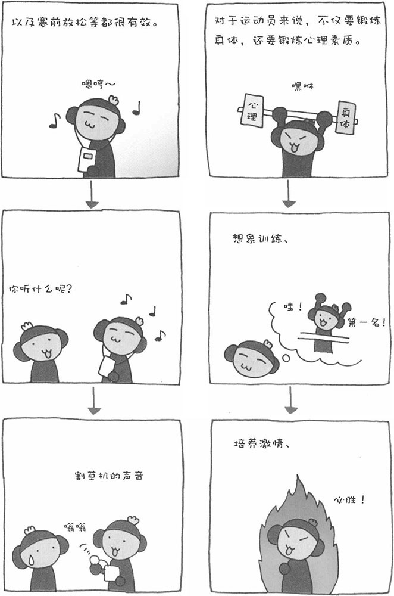

在体育比赛中，有些项目对运动员的心理素质要求很高。运动心理学就是为了提高运动员的成绩而研究各种心理效果的心理学。以柔道和拳击等分级别的比赛为例，自己减轻体重降低级别，就会给对手造成巨大的心理压力。利用这种方法给对手施加压力，是运动心理学中常用的战术。此外，最近运动心理学研究的范畴已不仅仅局限于运动员的心理了，对于一般人的心理和行为也进行研究。
■ 棒球选手上场前为什么要围成一圈击掌高喊
在棒球、橄榄球、排球等体育比赛中，我们经常会看到运动员们在上场前围成一个圆圈、击掌高喊。采用这种方式，不仅可以统一运动员的思想，还能提高大家的士气。这叫做"psych up（做好精神准备）"，即为了迎接比赛，把运动员的紧张状态调动起来。这种行为可以起到一种"心理开关"的作用。
其实，这种行为的历史由来已久。早在日本战国时代，两军对垒时，在开战以前，武将们都会高举战刀高声呼喊："耶！耶！噢！"，这样做的目的就是为了提高士气，为战斗做好精神准备。由此看来，古人那时已经懂得运用这种心理效果了。
■ 足球守门员的精神压力
在巴西，有学者对137名职业足球运动员进行了一项心理调查，调查的是不同位置的球员承受的精神压力有何差别。结果显示，夜间比赛时，人的知觉容易出现误差，因此守门员承受的精神压力最大。此外，在足球比赛开始后的几分钟，守门员感到的精神压力也比其他球员大很多。由此看来，守门员肩上的担子比其他球员都要重。对于前锋来说，他们的精神压力来自于吃黄牌或红牌。一旦受到裁判的黄牌或红牌警告，将直接影响到下一场比赛他能否继续上场。
